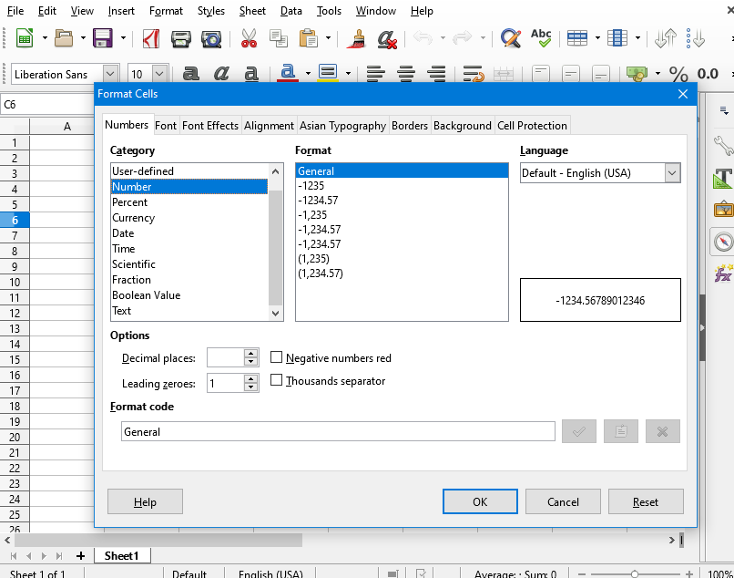
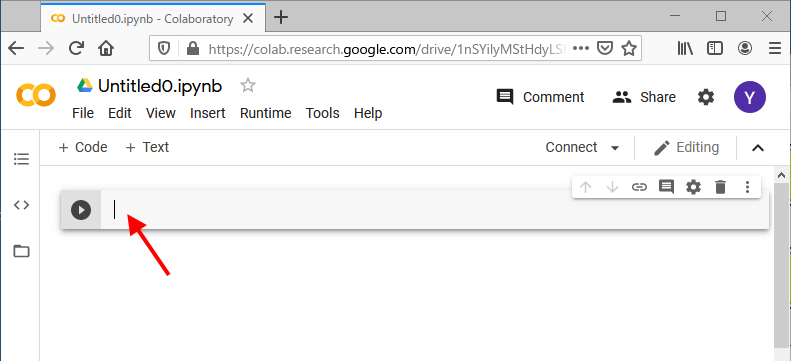

情報リテラシ第二 (1a) 第2回
2020年6月29日 (月) 1-2限
- 前回までのあらすじ
- テキスト形式について (つづき)
- 「ターミナル (コマンド プロンプト)」とは何か?
- ファイルとフォルダ (つづき)
- matplotlib入門
- 本日のまとめ・小課題
- 次回予告
雑談
前回の教訓:
雑談に時間をかけすぎないこと。
0. 前回までのあらすじ
- 授業の目的と、データ管理の重要性について説明した。
- ファイル形式、拡張子、およびパス名について説明した。
- テキストエディタの使い方を学習した。
- ファイル名とは何か?
- ファイル形式とは何か?
- ファイル形式は何によって決まるか?
- 各ファイルがもっている情報には
(ファイル名とファイル形式以外に) どんなものがあるか?
- パス名とは何か?
- テキストエディタとは何か?
1. テキスト形式について (つづき)
- 拡張子が
.txt以外の「テキスト形式」:
- HTML形式:
.htm (.html)
- CSV形式:
.csv
- TeX形式:
.tex
- ...
- これらの形式はすべてテキストエディタ (メモ帳・テキストエディット) で開ける。
- この授業で究極的にやること:
「テキスト形式のファイルをうまいこと作成し、それを提出する」
- この授業スライドのページ (HTMLファイル) をブラウザで開き、ファイルとして保存せよ。
- 保存したファイルが置かれている位置 (パス名) を答えよ。
- HTMLファイルをテキストエディタで開き、中に隠されている合言葉を発見せよ。
(なお、HTMLファイルを普通にダブルクリックするとブラウザが開いてしまうので、
テキストエディタを開いておいて、そこにドラッグ・ドロップするとよい。)
2. 「ターミナル (コマンド プロンプト)」とは何か?
2.1. ターミナルを起動する
Windowsの場合
- スタートメニューから Windows システムツール →
コマンド プロンプト を選ぶ。
Macの場合
- Finder のメニューから 表示 →
ユーティリティ を選び、
ターミナル のアイコンを開く。
2.2. ターミナルの使い方・超基本
- コマンドを入力して Enter を押す。
- コマンドには、実行するアプリのパス名を入力する。
- そのアプリが実行され、結果が表示される。
- → 1. に戻る。
文字入力するときの注意
アプリのパス名をコマンドとして入力すると、そのアプリが実行される。
- Windowsの場合:
コマンド・プロンプトを開き、以下のコマンドを半角で入力せよ:
- C:\Windows\System32\notepad.exe
- Macの場合:
ターミナルを開き、以下のコマンドを半角で入力せよ:
- /System/Applications/TextEdit.app/Contents/MacOS/TextEdit
2.3. ターミナルの便利な機能
補完機能を使って、
以下のコマンドを
20回以下のキー入力で入力せよ。
- Windowsの場合:
- C:\Windows\System32\mspaint.exe
- Macの場合:
- /Applications/Safari.app/Contents/MacOS/Safari
2.4. なぜターミナルがいいのか?
- 「やること」を言葉で書ける。
アイコンやウィンドウを使った入力方式を GUI (Graphical User Interface) と呼ぶ。
これは、直感的ではあるが指示しにくい。

「ここをクリックして、あれをドラッグして…」
- より細かく条件・処理を指定できる。
例. 「東工大のウェブサイトにあるPDF形式のファイル」をすべて検索:
Google検索: site:titech.ac.jp filetype:pdf
- より厳密に書ける:
- 「1から始まるn個の奇数を2乗したものをすべて足した数」
- Σi=1...n (2i - 1)2
科学における再現性とは
- 再現性 = 「誰がやっても、同じようにやれば同じ結果になること」
(物理実験・化学実験は??)
- きちんとした手順を言葉で書き残しておくことが重要。
3. ファイルとフォルダ (つづき)
- パソコン上のすべてのファイル・フォルダの位置は、パス名で表せる:
3.1. カレント・フォルダ
- パス名を使うことの問題: いくらでも長くなりうる!
/Applications/Safari.app/Contents/MacOS/...
- いちいちパス名を入力するのは面倒。簡単にできないか?
→ いま注目している (カレント, current) フォルダという考え。
以下のコマンドを順に実行し、何が起きたのか観察せよ:
- Windowsの場合:
- cd
- dir
- cd \Windows
- cd
- dir
- Macの場合:
- pwd
- ls
- cd /Applications
- pwd
- ls
現在の「注目しているフォルダ」のことを
「カレント・フォルダ」あるいは
「カレント・ディレクトリ」と呼ぶ。
(もともとフォルダはディレクトリと呼ばれていた。
用語としては、ディレクトリのほうが古い。)
Windowsの場合
- cd (Change Directory) コマンド:
カレント・フォルダのパス名を表示する。
- cd パス名 (Change Directory) コマンド:
カレント・フォルダを指定したパス名に変更できる。
- ls コマンド:
パス名を省略して実行すると、
カレント・フォルダのファイル一覧を表示する。
Macの場合
- pwd (Print Working Directory) コマンド:
カレント・フォルダのパス名を表示する。
- cd パス名 (Change Directory) コマンド:
カレント・フォルダを指定したパス名に変更できる。
- ls コマンド:
パス名を省略して実行すると、
カレント・フォルダのファイル一覧を表示する。
- 自分のデスクトップ (フォルダ) のパス名を確認せよ。
- cd コマンドを使って、
現在の注目フォルダを自分のデスクトップフォルダに変更せよ。
- テキストエディタを使って、デスクトップ上にテキストファイルを作成せよ。
- pwd または ls コマンドを使って、
いま作成したファイル名が現れていることを確認せよ。
雑談・その2
4. matplotlib入門
4.1. matplotlib とは?
本授業では、おもに a. の方法を利用するが、
b. を使ってもよい (結果は同じである)。
Google Colaboratory を使う場合
- File メニューから New Notebook を選ぶ。
- 以下のような画面が出る。この枠内に文字を入力する。

Anaconda を使う場合
- Jupyter Notebook を起動する。
- New Notebook (Python3) を選ぶ。
- 以下のような画面が出る。この枠内に文字を入力する。
4.2. グラフを描画する
Google Colaboratory (あるいは Jupyter Notebook) で
以下のプログラムを入力し、
再生 (あるいは Run) ボタンを押して実行せよ。
(キーボードの Ctrl + Enter でも実行できる。)
import numpy as np
import matplotlib.pyplot as plt
x = np.linspace(0, 10, 100)
plt.plot(x, np.sin(x), label="sin(x)")
plt.xlabel("x label")
plt.ylabel("y label")
plt.title("Simple Plot")
plt.legend()
plt.show()
正しく動作していれば、以下のような画面が表れるはずである:
時間に余裕があれば、以下もやってみよう:
- 上のプログラムの中で、以下の行
plt.plot(x, np.sin(x), label="sin(x)")
を次のように書き換え、結果を観察せよ。
plt.plot(x, x, label="linear")
plt.plot(x, x**2, label="quadratic")
plt.plot(x, x**3, label="cubic")
- プログラム中の "〜" で囲まれている部分
(
"Simple Plot", "x label", "linear" など) を
書き換え、結果を観察せよ。
4.3. グラフを画像ファイルとして保存する
上のプログラムに以下の一行を追加すると、
描画したグラフを実際にファイルとして保存 (ダウンロード) することができる。
import numpy as np
import matplotlib.pyplot as plt
x = np.linspace(0, 10, 100)
plt.plot(x, np.sin(x), label="sin(x)")
plt.xlabel("x label")
plt.ylabel("y label")
plt.title("Simple Plot")
plt.legend()
plt.savefig("sinx.png")
plt.show()
注意:
plt.savefig(...) の部分は
必ず plt.show() の前に書くこと。
Google Colaboratory を使う場合
Google Colaboratory は、内部にファイルを持っている。
上のプログラムが正しく動作すると、
sinx.png ファイルが生成される。
これを自分の PC にダウンロードするには、以下のようにする。
- 画面の左側の「フォルダ」アイコンをクリックする。
- 初期化にしばらく時間がかかるので、10秒ぐらい待つ。
-
sinx.png というファイルが表示されるので、
右クリックして Download を選ぶ。
- ダウンロードしたファイルを PC 上に保存する。
Jupyter Notebook を使う場合
Juypter Notebook では、
画像ファイルは自分のホームフォルダ内に保存されている。
フォルダを開いて sinx.png が生成されていることを確認する。
(なお、作成した Notebook 自体もホームフォルダ内に保存されている。)
5. 本日のまとめ・小課題
- ターミナルの使い方を学習した。
- dir / ls コマンド
- cd コマンド
- pwd コマンド
- 長いパス名を省略する方法として、
カレント・フォルダという考え方を学習した。
- matplotlib を使ってグラフを描いてみた。
- 締め切り: 7月6日 (1週間後)
- 上で説明した方法を使って、なんらかのグラフを描画し、
その画像ファイルを OCW-i から提出せよ。
- ファイル名はなんでもよいが、拡張子は
.png であること。
6. 次回予告
- コマンドの使い方つづき。
- 絶対パス名と相対パス名。
- matplotlib の使い方つづき。
Yusuke Shinyama